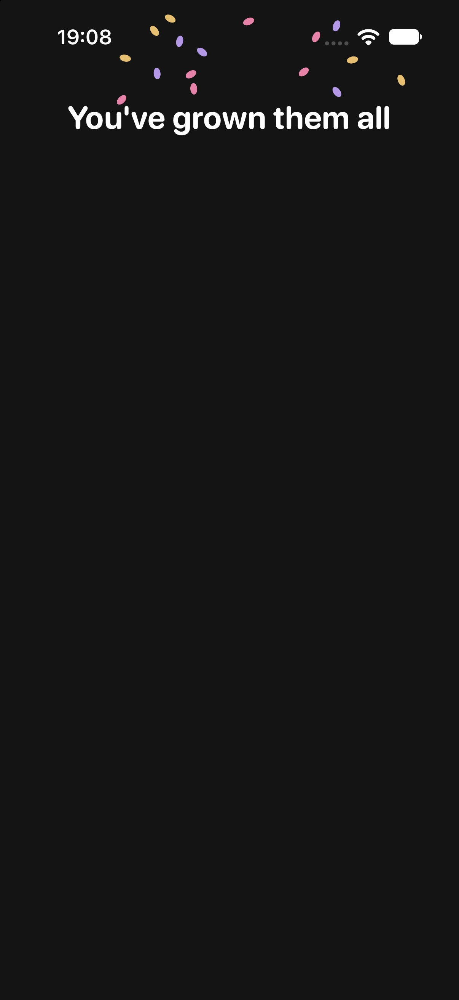
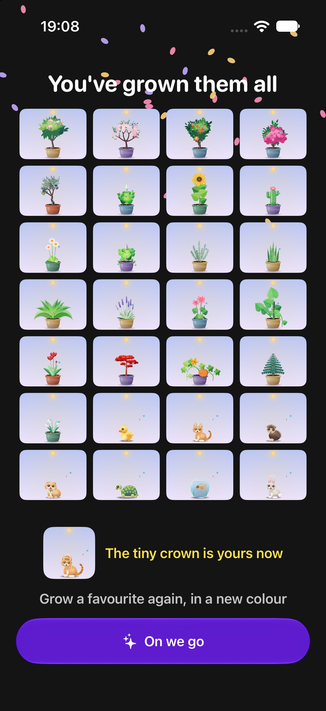
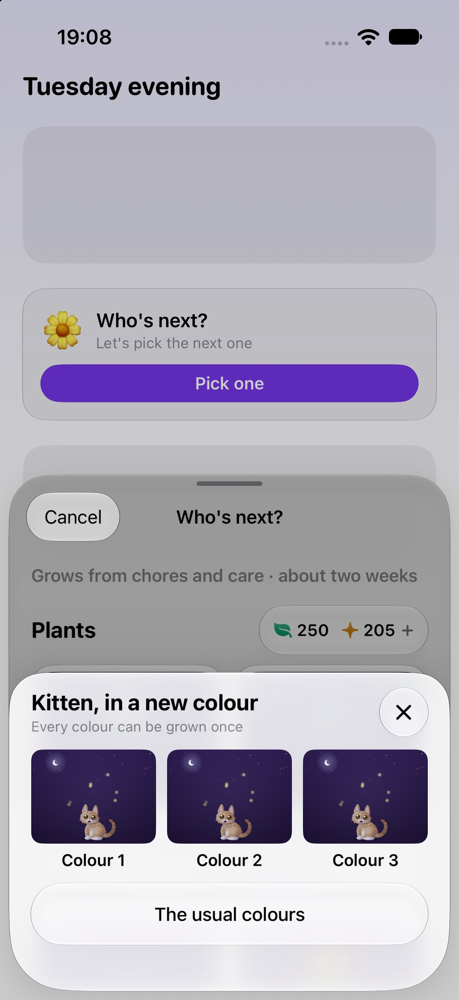
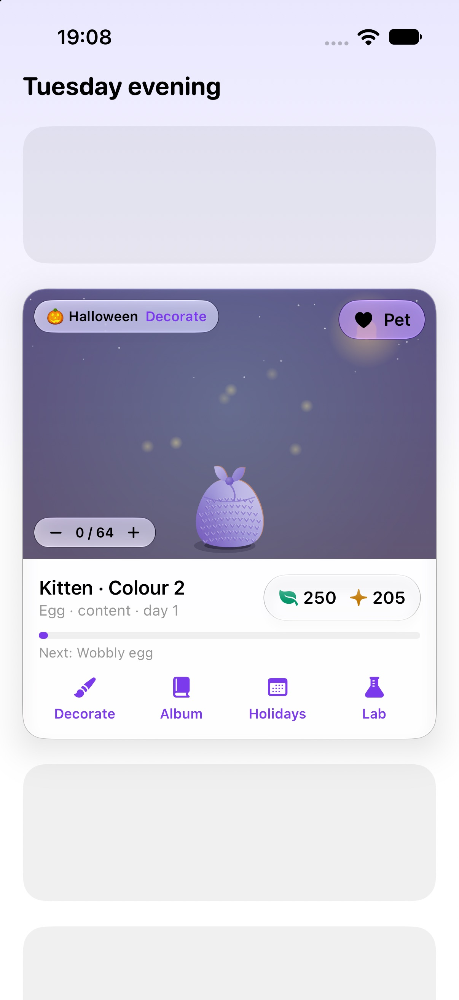
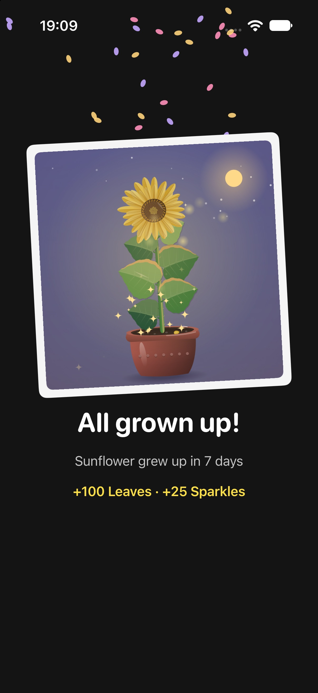
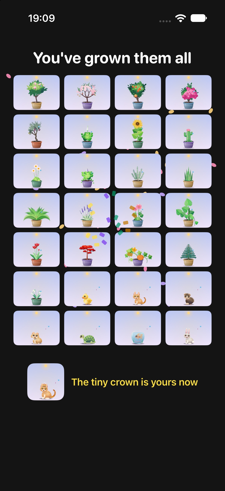
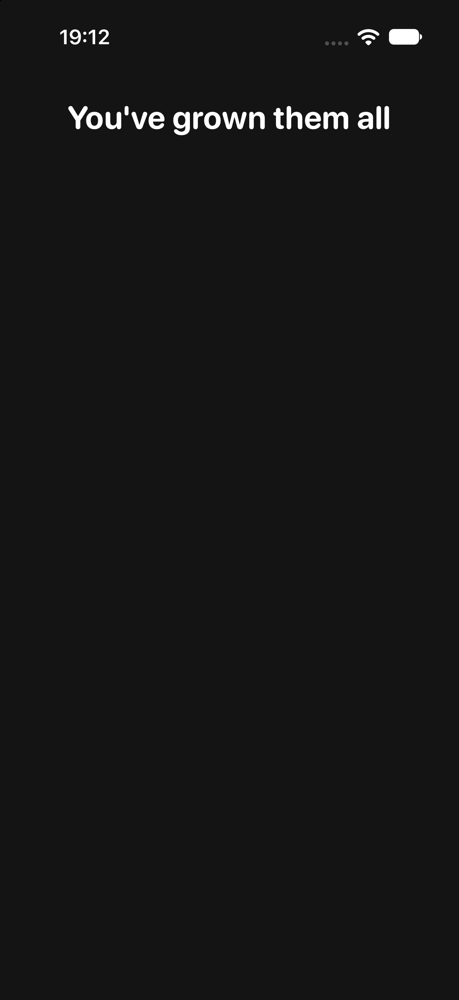
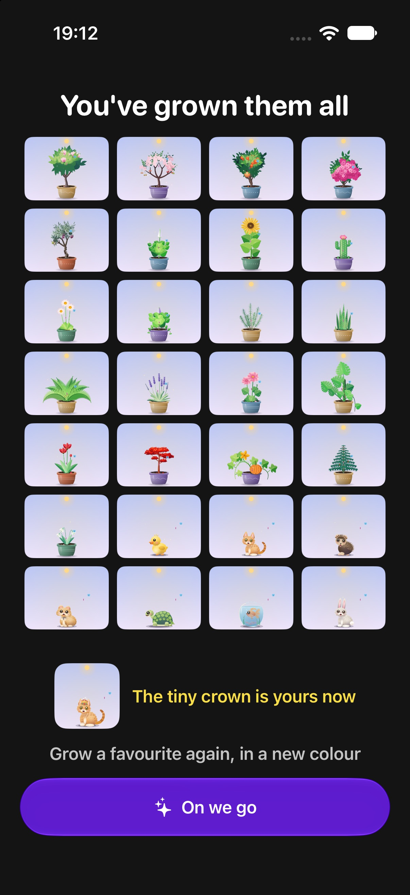

Run on the bench: -nestieBench 1 -nestieScenario finale -nestieScript finale (graduate flow), finaleStart (start flow, one cover), and the same with Reduce Motion on. Colour names are placeholders until the art table lands, and all three swatches draw alike until the painters take colourway.
-frameMeter 2, iPhone 17 simulator, Debug)| First frame of the cover | Worst frame after it | Late frames in the cascade | |
|---|---|---|---|
| Graduation cover (baseline, same run) | about 36 ms | 175 ms (presentation) | n/a |
| Finale cover, first version | 108 ms | 108 ms | a run of nine 33 ms frames |
| Finale cover, stills warmed ahead, tiles built a row a frame, cascade by one animated value | 35 ms | 138 ms (the same presentation frame the graduation cover has) | two 34 ms frames |
Finale in the start flow (finaleStart) | 38 ms | 41 ms | none above 41 ms |







